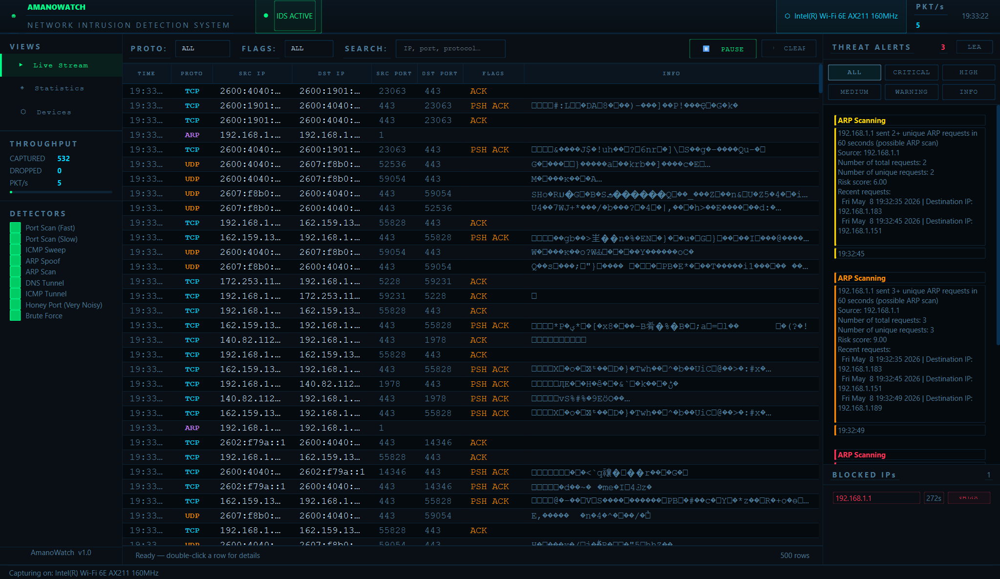

Cybersecurity Tool
AmanoWatch Intrusion Detection System
An open-source IDS built for network enthusiasts, penetration testers, and security professionals. Provides real-time detection of port scans, brute force attempts, ARP spoofing, DNS tunneling, ICMP tunneling, and honeyport connections — alongside a lightweight interface to filter and view live and historical network traffic.
